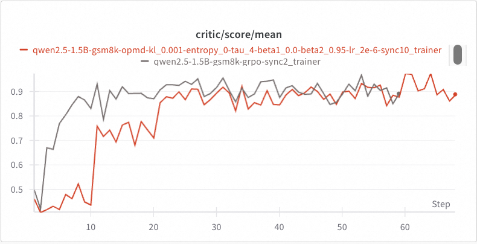

Off-Policy RFT
Let’s continue with the previous GSM8k example and show some advanced features provided by Trinity-RFT, namely, off-policy or asynchronous RFT mode.
OPMD: a native off-policy RL algorithm
As an experimental feature of Trinity-RFT, we develop an embarrasingly simple off-policy RL algorithm, termed as OPMD (Online Policy Mirror Descent, inspired by Kimi k1.5).
The algorithm design and analysis can be found in this technical report.
The config files are opmd_gsm8k.yaml and train_opmd_gsm8k.yaml.
To try out the OPMD algorithm:
trinity run --config examples/opmd_gsm8k/opmd_gsm8k.yaml
Note that in this config file, sync_interval is set to 10, i.e., the model weights of explorer and trainer are synchronized only once every 10 training steps, which leads to a challenging off-policy scenario (potentially with abrupt distribution shift during the RFT process).
Other configurations of particular interest are explained at the beginning of train_opmd_gsm8k.yaml.
The red curve below shows an example of OPMD’s learning curves.
Since the explorer’s model weights remain unchanged for the first 10 steps, its score remains flat.
Then, after the model weights of explorer and trainer are synchronized at the end of step 10, we see an abrupt increase in score at step 11, which indicates effective off-policy learning in the first 10 steps.
A similar performance boost is shown at step 21, which leads to a converged score matching what is achieved by GRPO in a mostly on-policy case (with sync_interval=2).
